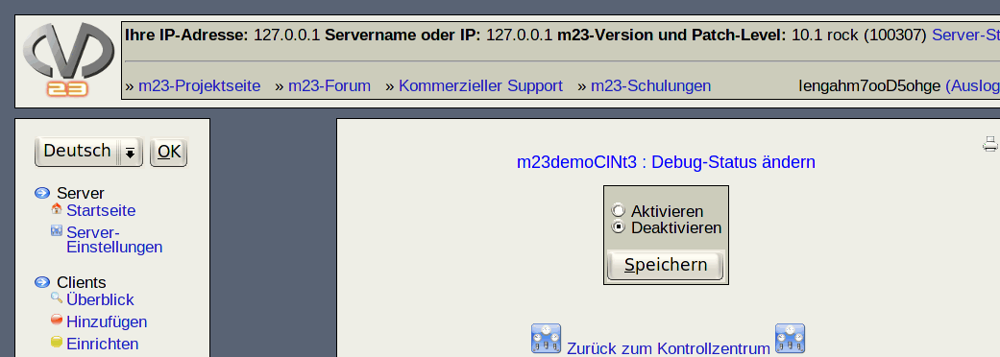

Clients mit aktiviertem Debug-Modus zeigen keine Benutzer-Status-Informationen auf dem Bildschirm, sondern die Ausgabe des laufenden Skriptes und der darin verwendeten Programme.

So kann besser erkannt werden, ob es beim Ausführen des Skriptes zu Fehlern kommt.
root
2018-01-09